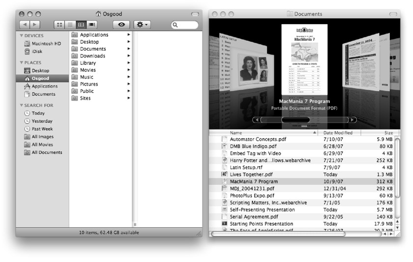

The Desktop Setup Script
Using all the properties and verbs we’ve covered so far, you now have the tools to create a script you can use to quickly return a cluttered Desktop to a default window configuration. Follow these steps for preparing the script.
First, set up the Desktop to what you want to be the finished state. For the purposes of this tutorial, follow the example shown in the figure below.
Close all the open Finder windows on your Desktop. Open two Finder windows and arrange them as shown in the following illustration. Note that the window on the left is displaying its toolbar, while the window on the right is not. Don’t worry about setting the target folders in each window; just set the shape and position of the two windows. Leave the window on the left selected as the frontmost window.
{kind=link}

An example window arrangement for the Desktop Setup script.
NOTE: The display mode for the Documents folder in the Desktop Setup script example uses the flow view introduced in Mac OS X 10.5 (Leopard). If you are currently using an earlier version, substitute list view for flow view.
Next, use the follwoing scripts to extract the bounds of both windows, and write them down for later use in the Desktop Setup Script.

tell application "Finder" to get the bounds of Finder window 1
--> returns something like: {36, 116, 511, 674}

tell application "Finder" to get the bounds of Finder window 2
--> returns something like: {528, 116, 1016, 674}